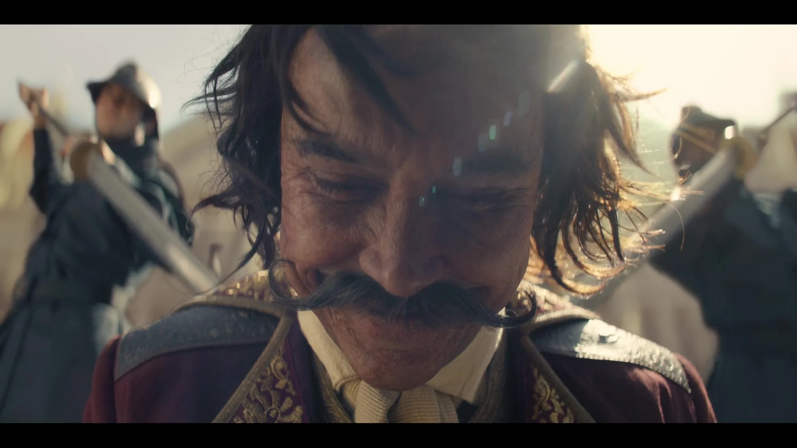
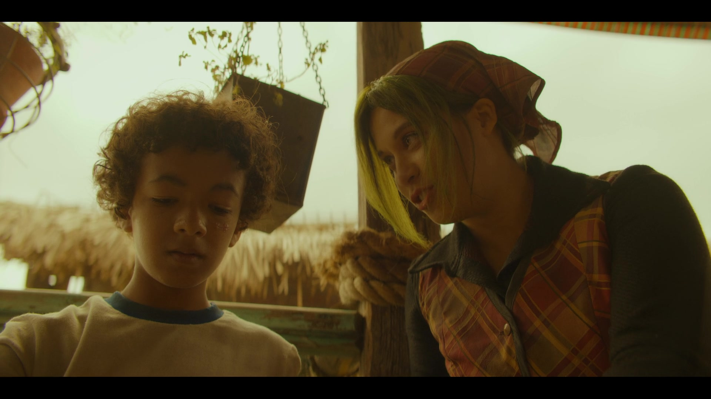
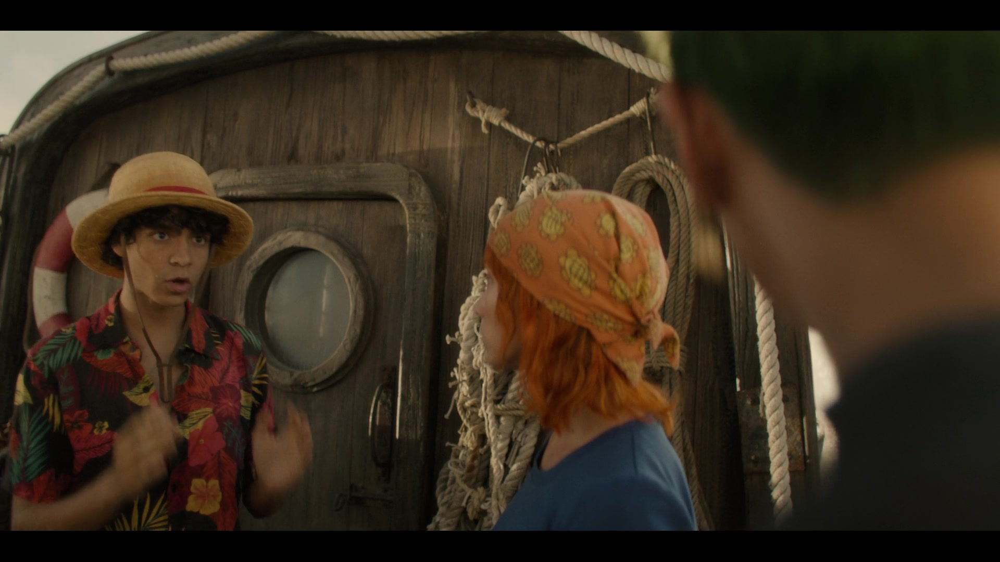
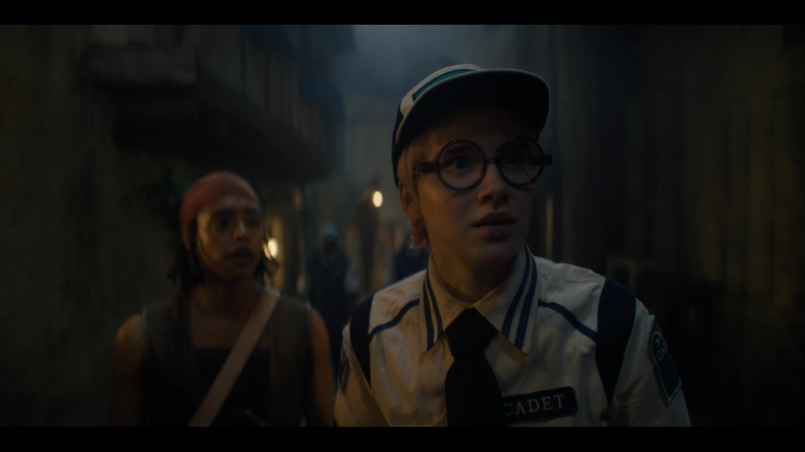
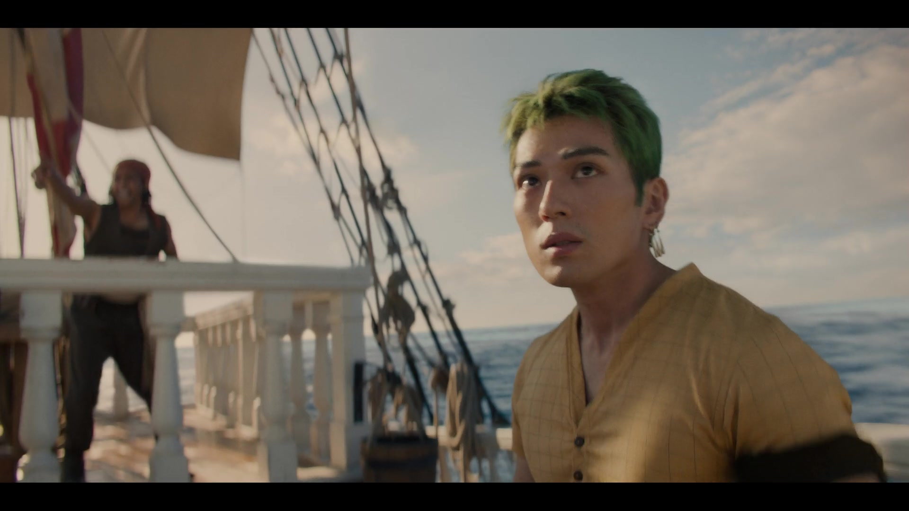
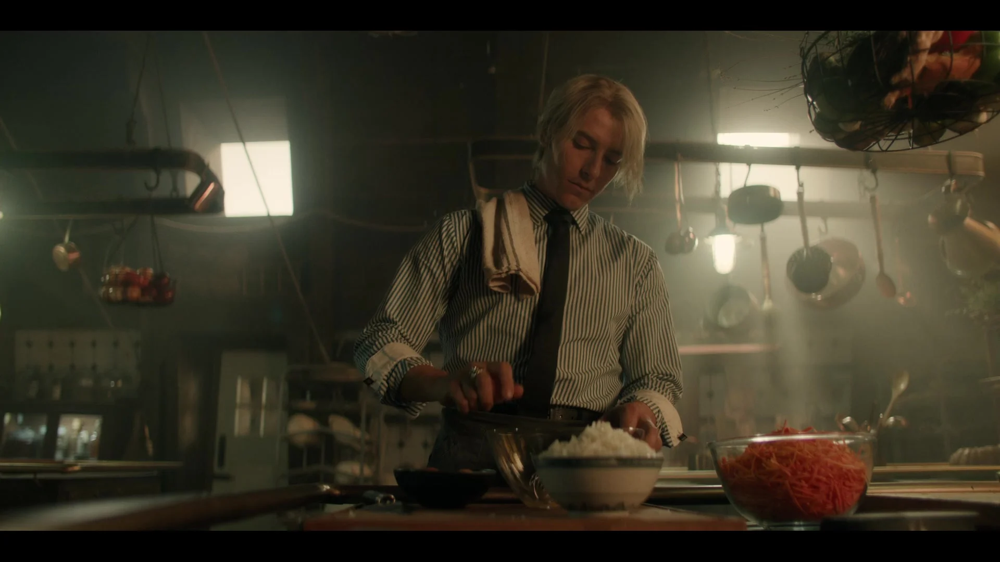
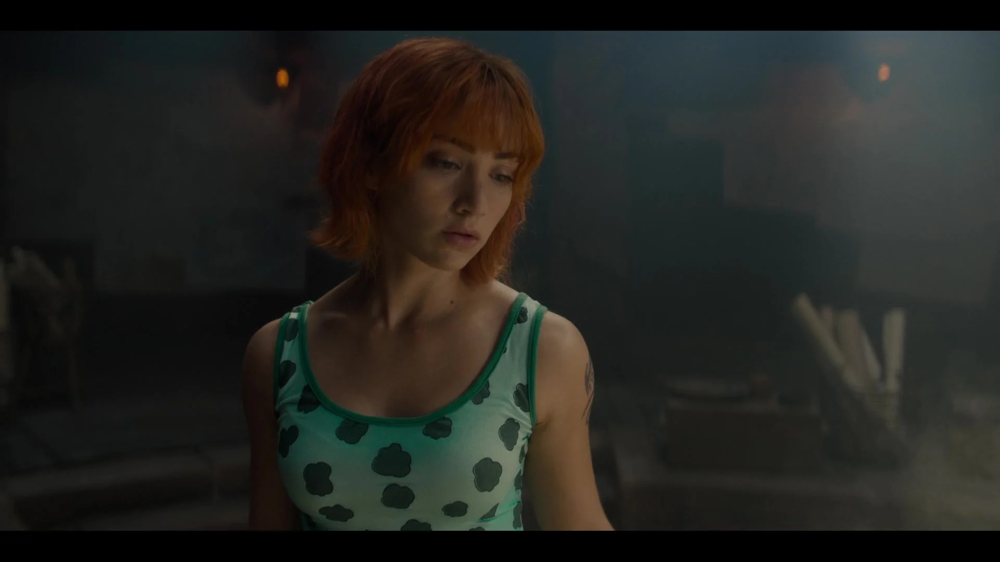
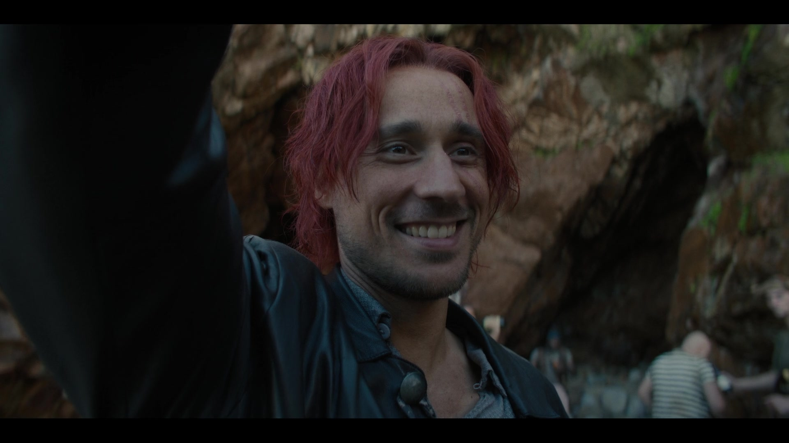

Romance Dawn: Episode 1
Monkey D. Luffy, a spirited pirate seeking One Piece, befriends Koby, meets Nami, and teams up with Roronoa Zoro in Shells Town.
Watch Now
Here we have short summaries on the 8 available episodes in the series.

Monkey D. Luffy, a spirited pirate seeking One Piece, befriends Koby, meets Nami, and teams up with Roronoa Zoro in Shells Town.
Watch Now
On an island controlled by the insane clown pirate Buggy, Luffy, Zoro, and Nami are kept captive. Koby enlists in the Marines and establishes his worth.
Watch Now
After landing in Syrup Village, Luffy, Zoro, and Nami meet Usopp, a local who introduces them to Kaya, a sick shipyard heiress cared after by three domineering house staff members. Vice Admiral Garp, a strong marine, sets out to find Luffy with Koby's assistance.
Watch Now
Kaya's mansion has been turned into a prison, and Luffy, Zoro, and Nami must battle their way through it. Uospp calls on Helmeppo, Koby, and the Marines for assistance. As Garp draws near, Luffy eventually gets the ship of his dreams.
Watch Now
Luffy and the gang are tested in their ability to fight together on the high seas. When they get to the floating restaurant Baratie, they meet Sanji, a young cook who enjoys fine dining. The group is shocked by a duel on the docks.
Watch Now
A threat that nobody anticipates ambushes the group. Sanji eventually pursues his dreams after a valiant battle at the Baratie, while another crew member reveals their true nature.
Watch Now
A member in desperate need of a family receives help from the crew.
Watch Now
After taking down Arlong's crew, the Straw Hats raid Arlong Park. Luffy receives his first bounty for taking down the pirate, and the crew sets sail for the Grand Line.
Watch Now| Charater | Actor |
|---|---|
| Monkey D. Luffy | Iñaki Godoy |
| Roronoa Zoro | Mackenyu |
| Nami | Emily Rudd |
| Usopp | Jacob Romero Gibson |
| Sanji | Taz Skylar |
| Shanks | Peter Gadiot |
| Koby | Morgan Davies |
| Buggy | Jeff Ward |
| Dracule Mihawk | Steven John Ward |
If you'd like more aboout the cast, click Here.